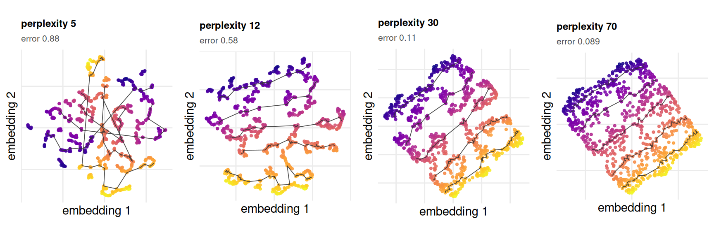
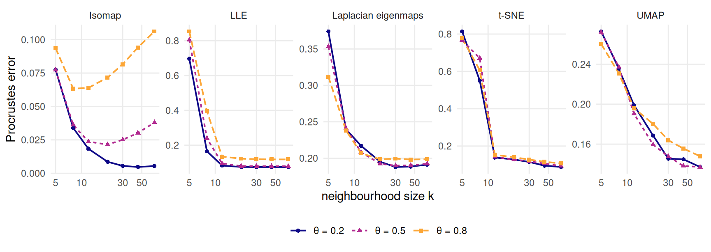

6 Neighbour embeddings
Why do t-SNE and UMAP disagree about the same data?
6.1 What this chapter answers
The four methods in this chapter — LLE, Laplacian eigenmaps, t-SNE and UMAP — do not try to recover the unfolding. That sentence has to come before any number, because the rest of the chapter scores them against the unfolding and a reader who meets the scores first will read them as a verdict on the methods rather than on the pairing.
What each of them minimises is a discrepancy between neighbourhoods: which
points are near which, in the ambient cloud and in the picture. None of them
carries a term that asks for a distance to be reproduced. The registry records
this as a field rather than as a remark — consumes = "neighbourhood" — so a
later chapter cannot forget it. reconstruction_error() is a Procrustes
distance to the chart, and asking these four to be small on it is asking them
for something they were never built to deliver.
Then this chapter judges them by it anyway, for two reasons. The reader will: every one of these methods is used in practice as though its output were a map, and a map is a claim about distance. And the benchmark can, which is the rarer thing — the answer key exists in closed form, so the question “how much of the geometry survived?” has an exact answer rather than an argument. What comes out is not that the methods are bad. It is that the setting on which they are most often tuned, and the picture that tuning produces, move in the opposite direction to accuracy.
6.2 Setup
grid <- read_run("data/processed/benchmark-grid.rds", "2483a468d82d4d64")
sweeps <- read_run("data/processed/part2-sweeps.rds", "16d43ff4992c0e58")
budget <- read_run("data/processed/seed-budget.rds", "e5f73dce72d53066")
NBR <- c("lle", "laplacian", "tsne", "umap")
pat <- miura_ori(nx = 6L, ny = 6L)
cell <- sample_manifold(pat, theta = 0.5, n = N_DEFAULT, seed = BENCH_SEEDS[1])Three committed artefacts. benchmark-grid.rds sweeps \(\theta\) at fixed
neighbourhood size; part2-sweeps.rds sweeps the neighbourhood size at three
fixed \(\theta\); seed-budget.rds is the measurement standing rule 1’s seed
floor is checked against. cell is one sample, drawn once, used for every
figure that shows an embedding rather than a curve.
6.3 Background
knitr::kable(
method_table()[method_table()$chapter == 6L,
c("label", "consumes", "stochastic")],
row.names = FALSE,
caption = "The four registry entries this chapter describes.")| label | consumes | stochastic |
|---|---|---|
| LLE | neighbourhood | FALSE |
| Laplacian eigenmaps | neighbourhood | FALSE |
| t-SNE | neighbourhood | TRUE |
| UMAP | neighbourhood | TRUE |
LLE (30) writes each point as a weighted combination of its \(k\) nearest neighbours and then finds the low-dimensional configuration that keeps those weights. Laplacian eigenmaps (28) takes the bottom eigenvectors of the graph Laplacian of a heat-kernel-weighted neighbourhood graph. Both are spectral, deterministic, and solve a single eigenproblem.
t-SNE (7) converts ambient distances into a neighbour-probability distribution, converts embedding distances into a second one with a heavy-tailed kernel, and minimises the Kullback–Leibler divergence between them by gradient descent from a random initialisation. UMAP (8) builds a fuzzy simplicial set on the neighbourhood graph and minimises a cross-entropy, also from a random start. Both are stochastic, and the registry refuses to run them unseeded:
unseeded <- tryCatch(embed("tsne", cell), error = conditionMessage)
cat(strwrap(unseeded, width = 72), sep = "\n")#> tsne is stochastic and was called without a seed. Standing rule 1:
#> every stochastic result in this book is reported across BENCH_SEEDS,
#> and an unseeded fit cannot be one of them.That error is deliberate. Standing rule 1 says every stochastic result in this
book is reported across BENCH_SEEDS, and an unseeded fit cannot be one of
them — it is an anecdote with no way of being labelled as one afterwards. The
cheapest place to enforce a reporting rule is at the call that would break it.
Two neighbourhood parameters, two names, one quantity. t-SNE’s is
perplexity, a smooth measure of the effective number of
neighbours; UMAP’s is n_neighbors. R/methods.R
maps the registry’s k onto both, so a sweep over
k is a sweep over perplexity for one and over
n_neighbors for the other, and the curves are comparable. A
previous version of embed_tsne() declared k
and passed a fixed perplexity — every k returned the same
embedding, and a flat curve would have been read as insensitivity to
neighbourhood size.
6.4 What the methods produce, and what it costs
fit <- lapply(NBR, function(m)
embed(m, cell, k = K_DEFAULT,
seed = if (isTRUE(METHOD_REGISTRY[[m]]$stochastic)) BENCH_SEEDS[1]))
names(fit) <- NBR
Dchart <- reference_dist(cell, "chart")
cell_err <- vapply(fit, reconstruction_error, numeric(1), truth = cell$truth)
cell_qnx <- vapply(fit, qnx, numeric(1), reference = Dchart, K = K_QNX)![Four scatter panels of the same 800 points, each with its own axes. The LLE panel is an evenly filled quadrilateral with a smooth top-to-bottom colour ramp and four level-set paths that run across it without crossing. The Laplacian eigenmaps panel is a quadrilateral whose points crowd onto its edges, leaving the interior sparse. The t-SNE panel is broken into many small separated islands with the level-set paths jumping between them. The UMAP panel is broken into curved filaments and loops with the ramp ordered left to right along them.](06-neighbor-embeddings_files/figure-html/nbr-fig-embeddings-1.png)
Figure 6.1: One folded sample, embedded four ways. Colour is the first chart coordinate and the black paths are level sets of the second, so a faithful embedding shows a smooth colour ramp crossed by non-intersecting paths. The Procrustes error against the chart is printed under each panel. The axes carry no numbers because an embedding is defined only up to a similarity and its units mean nothing.
Figure 6.1 is one cell of the grid — a Miura at \(\theta =\) 0.5, 800 points, no noise — seen four ways. LLE returns the chart to within 0.092; UMAP to 0.18; Laplacian eigenmaps to 0.22; t-SNE, at this neighbourhood size, to 0.63, which is most of the way to the score a random configuration earns.
The \(Q_{NX}\) column tells a different story about the same four pictures. Scored at \(K =\) 20 against the chart, they run 0.911, 0.757, 0.767 and 0.755. t-SNE, last by Procrustes distance by a factor of 3.5, is ahead of UMAP on rank preservation. That is not a contradiction and not a defect in either metric: one reads distances and the other reads rank order, and an embedding that shatters the sheet into islands can keep every local rank while destroying every distance between islands.
6.4.1 The deception
The parameter these methods are tuned on is the neighbourhood size, and tuning is done by looking. That is the part exact truth is able to expose.
KS <- c(5L, 12L, 30L, 70L)
tperp <- lapply(KS, function(kk) embed("tsne", cell, k = kk,
seed = BENCH_SEEDS[1]))
perp_err <- vapply(tperp, reconstruction_error, numeric(1), truth = cell$truth)
perp_qnx <- vapply(tperp, qnx, numeric(1), reference = Dchart, K = K_QNX)
Figure 6.2: t-SNE on one sample at four perplexities. Left to right the picture loses every visible feature and gains an order of magnitude in accuracy. Colour is the first chart coordinate; the black paths are level sets of the second, and the axes are unnumbered for the same reason as in the previous figure.
The left-hand panel of Figure 6.2 is the picture practitioners recognise and reward: crisp, well-separated islands, obvious structure, something to point at. It scores 0.88. The right-hand panel is a featureless filled quadrilateral with no structure to point at whatsoever. It scores 0.089, a factor of 9.9 better, and it is featureless because the answer is a flat rectangular patch. The truth here has no clusters in it. Every island in the left-hand panel is an artefact of the setting.
\(Q_{NX}\) against the chart moves the same way — 0.727 to 0.875 — so this is not one metric’s idiosyncrasy. What disagrees with both is the eye. The tuning advice that circulates for these methods is largely advice about how the picture looks (19,31), and on this benchmark that advice points away from the truth, monotonically, across the whole swept range.
6.5 Results
cl <- grid[grid$noise == "none" & grid$status == "ok" &
grid$method %in% c(NBR, "isomap"), ]
sp <- do.call(data.frame,
aggregate(rmse ~ method + theta, cl,
function(x) c(lo = min(x), med = median(x),
hi = max(x))))
names(sp) <- sub("^rmse\\.", "", names(sp))
th_max <- max(THETA_GRID)
degrade <- vapply(c(NBR, "isomap"), function(m) {
a <- sp[sp$method == m, ]
a$med[a$theta == th_max] / a$med[a$theta == 0]
}, numeric(1))
widths <- transform(sp, w = hi - lo)
worst <- widths[widths$method == "tsne", ]
worst <- worst[which.max(worst$w), ]
out_hi <- aggregate(rmse ~ method,
grid[grid$noise == "outlier" & grid$status == "ok" &
grid$theta == th_max, ], median)
out_hi <- setNames(out_hi$rmse, out_hi$method)
out_hi_mid <- aggregate(rmse ~ method,
grid[grid$noise == "outlier" & grid$status == "ok" &
grid$theta >= 0.5, ], median)
out_hi_mid <- setNames(out_hi_mid$rmse, out_hi_mid$method)
tsn <- sp[sp$method == "tsne", ]; tsn <- tsn[order(tsn$theta), ]
ump <- sp[sp$method == "umap", ]; ump <- ump[order(ump$theta), ]
gap <- abs(tsn$med - ump$med)
over <- pmin(tsn$hi, ump$hi) > pmax(tsn$lo, ump$lo)
jump <- function(noise) {
a <- aggregate(qnx ~ theta,
grid[grid$method == "lle" & grid$noise == noise &
grid$status == "ok", ], median)
max(diff(a$qnx[order(a$theta)]))
}
lle_jump <- c(none = jump("none"), outlier = jump("outlier"))The prediction, stated before the figure because a flat curve otherwise reads as nothing happening: these curves should be nearly flat. Fold angle is a difficulty parameter for a method that consumes distance, because folding contracts ambient distance and leaves the chart alone (Chapter 2). It is a much weaker difficulty parameter for a method that consumes rank order, because within a facet the fold changes no distance at all and across a crease it changes ranks only where two facets pass close. A method that never trusted global structure has less to lose as the global structure degrades.
![Four line panels, one per method, sharing axes, in the order LLE, Laplacian eigenmaps, t-SNE, UMAP. The horizontal axis is the folding parameter from zero to one and the vertical axis is Procrustes error from zero to about one. LLE starts low and rises steadily, with a band that widens sharply beyond the middle of the range. Laplacian eigenmaps is almost horizontal with a narrow band. t-SNE is roughly horizontal with a band that spans most of the plot at every fold angle. UMAP is almost horizontal with a moderate band. In every panel the dashed grey Isomap line starts far below the band and rises steeply, reaching the lower edge of the band only at the right-hand end.](06-neighbor-embeddings_files/figure-html/nbr-fig-theta-1.png)
Figure 6.3: Procrustes error against the chart across the fold sweep, no noise. The band is the full spread across the twenty benchmark seeds and is the result; the solid line is its median, drawn to locate the band rather than to summarise it. The dashed grey line in each panel is Isomap’s median, for scale.
Figure 6.3 is the prediction met. From flat sheet to \(\theta =\) 0.95, Isomap’s median error grows by a factor of 7.9; Laplacian eigenmaps’ by 1.1, UMAP’s by 1.3, t-SNE’s by 1.7. Only LLE behaves like a distance method, at 5.3, which is what one would expect of a method whose weights are least-squares reconstructions in the ambient space.
Flatness is not a compliment here. Isomap is better than all four at every \(\theta\) in this regime, including the last one, and it gets there by consuming a geometry the crease pattern supplies exactly. A flat curve at a mediocre level says the error is dominated by something the fold does not touch — the objective mismatch itself — not that the method is robust.
Where the flatness does buy something is off the clean diagonal. Under the outlier noise model at \(\theta =\) 0.95, the ordering inverts: t-SNE lands at 0.402 and UMAP at 0.407, against 0.608 for Isomap, 0.626 for PCA and 0.888 for LLE. A handful of displaced points lengthens a shortest path through the neighbourhood graph and moves an ambient distance; it changes few ranks. The methods that were never reading distances are the ones that do not notice.
6.5.1 Neighbourhood size, and where Isomap breaks
sw <- sweeps[sweeps$status == "ok" & sweeps$method %in% c(NBR, "isomap"), ]
ks <- aggregate(rmse ~ method + k_tck + theta, sw, median)
k_max <- max(ks$k_tck)
best_k <- do.call(rbind, lapply(split(ks, list(ks$method, ks$theta)),
function(a) data.frame(method = a$method[1], theta = a$theta[1],
k_star = a$k_tck[which.min(a$rmse)],
penalty = a$rmse[a$k_tck == k_max] / min(a$rmse))))
iso_k <- best_k[best_k$method == "isomap", ]
iso_k <- iso_k[order(iso_k$theta), ]
nbr_k <- best_k[best_k$method %in% NBR, ]
Figure 6.4: Procrustes error against neighbourhood size, at three fold angles. Each panel has its own vertical scale, because the levels differ by more than an order of magnitude and the shape of each curve is the point. Isomap has an interior optimum that moves to smaller neighbourhoods as the sheet folds; every neighbour method is still improving at the largest size swept.
Figure 6.4 is the sharpest thing in the chapter. Isomap’s best neighbourhood size falls from 45 at \(\theta =\) 0.2, to 20 at 0.5, to 8 at 0.8. That is the short-circuit onset of Chapter 5 seen from the other side: as the sheet closes, the neighbourhood size at which the graph starts bridging between facets comes down, and past it Isomap’s error rises. Choosing 70 — an unremarkable choice — costs it a factor of 1.68 over its own optimum at the tightest fold.
Not one of the four neighbour methods has an interior optimum anywhere in this sweep. Their worst penalty for taking the largest neighbourhood swept is 1.02, across all twelve method–angle combinations; for most of them it is exactly one, because the largest neighbourhood is the best. They cannot be short-circuited by a neighbourhood that is too large, because they never built a global object out of local ones. This is the genuine win, and it is narrow: it is robustness to a tuning mistake and to contamination, not accuracy.
6.5.2 Do they actually disagree?
The chapter’s title asks why t-SNE and UMAP disagree about the same data. On this benchmark the honest answer is that mostly they do not, and what looks like disagreement is one draw from each of two wide distributions.
Their median errors differ by 0.048 across the sweep, against a t-SNE seed band whose median width is 0.72. The two bands overlap at 20 of the 20 fold angles in the grid — all of them. Two practitioners running one t-SNE and one UMAP on the same sample will get pictures that differ, and will usually be looking at within-method seed variation rather than at a difference between the methods. Where the two do separate is not in the median but in the spread: UMAP’s band is 4.9 times narrower than t-SNE’s, so a UMAP run is a much better estimate of what UMAP does than a t-SNE run is of what t-SNE does.
6.6 Diagnostics
6.6.1 Two conventions, and which claim needs which
Every claim above about recovery is made against the chart — the answer key
— using either the Procrustes error or \(Q_{NX}\) at \(K =\) 20. The grid
also carries trustworthiness, continuity and \(k\)-NN preservation, and those are
scored at \(k =\) 10 against ambient distance, which is a
different question: whether the embedding preserved the neighbourhoods a
method could actually see. Both are defensible and they are not
interchangeable. In part2-sweeps.rds the ambient-referenced trio is scored at
the swept \(k\), so its rows are not comparable with each other; \(Q_{NX}\) stays
pinned at 20 against the chart and is. Every number in this chapter’s
figures is one of the two chart-referenced ones.
Kgrid <- unique(round(exp(seq(log(2), log(400), length.out = 18L))))
ref <- c(fit, list(pca = embed("pca", cell),
isomap = embed("isomap", cell, k = K_DEFAULT)))
rx <- do.call(rbind, lapply(names(ref), function(m)
data.frame(method = m, K = Kgrid, rnx = rnx(ref[[m]], Dchart, K = Kgrid))))
margin <- min(vapply(Kgrid, function(kk) {
a <- rx[rx$K == kk, ]
a$rnx[a$method == "pca"] - max(a$rnx[a$method %in% NBR])
}, numeric(1)))
ts <- rx[rx$method == "tsne", ]![A line chart with a logarithmic horizontal axis for neighbourhood size K from 2 to 400 and a vertical axis for corrected rank preservation from about 0.6 to 1. The dashed PCA curve is the highest across the whole range and is nearly flat. The dashed Isomap curve starts below LLE at the smallest K, crosses above it early, and rises to the top by the right-hand end. Four solid curves sit below: LLE is nearly flat and highest of them; t-SNE starts close to LLE at small K and falls steadily to the lowest position at K equals 400; Laplacian eigenmaps and UMAP start lowest and rise together. Each curve is labelled at its right-hand end.](06-neighbor-embeddings_files/figure-html/nbr-fig-rnx-1.png)
Figure 6.5: Rank preservation against the chart across every neighbourhood size, on one sample. The two methods that consume distance or geodesics are drawn dashed. No neighbour method reaches PCA at any neighbourhood size, and t-SNE is the only curve that falls as the neighbourhood grows.
Figure 6.5 puts the global loss on one axis. \(R_{NX}(K)\) is \(Q_{NX}\) corrected for the \(K/n\) baseline, so it is comparable across neighbourhood sizes (32); small \(K\) is local structure and large \(K\) is global. PCA — a shadow, and the weakest thing in Part II by construction — sits above all four neighbour methods at every \(K\) from 2 to 400, by at least 0.032. There is no neighbourhood size at which any of these four is the better description of the chart’s rank order.
Isomap is the exception to note rather than to bury: at the smallest neighbourhood it sits below LLE, at 0.858 against 0.883, and only overtakes it a few neighbours later. A geodesic method has no special claim on the very local rank order, which is exactly the part LLE is built out of.
t-SNE is the only curve that falls: 0.848 at \(K =\) 2, 0.685 at \(K =\) 400. It buys the local structure it is best at by spending the global structure, which is the trade its critics describe and its defenders accept (1,2). Here the trade is priced exactly, because the thing being spent is known.
6.6.2 What twenty seeds is, and what it is not
bud <- budget$budget[budget$budget$method %in% NBR, ]
bud <- bud[order(-bud$seeds_needed), c("method", "stochastic", "sd",
"seeds_needed")]
knitr::kable(bud, row.names = FALSE, digits = 4,
col.names = c("method", "stochastic", "worst-cell sd",
"seeds needed"),
caption = "Seeds required to resolve a reportable difference, from data/processed/seed-budget.rds.")| method | stochastic | worst-cell sd | seeds needed |
|---|---|---|---|
| tsne | TRUE | 0.2873 | 3241 |
| lle | FALSE | 0.2034 | 1624 |
| laplacian | FALSE | 0.0446 | 79 |
| umap | TRUE | 0.0438 | 76 |
declined <- grid[grid$method == "laplacian" & grid$status == "declined", ]
dec <- table(declined$noise)
dec_share <- nrow(declined) / sum(grid$method == "laplacian")Standing rule 1’s floor is twenty seeds. seed-budget.rds measures what that
floor is worth: for each method it draws 40
samples per cell at three fold angles and two noise models, takes the
within-cell standard deviation of excess error over the floor, and inverts the
two-sample expression for the seeds needed to resolve a difference of
0.02 at 80% power and the 5% level.
None of the four passes. t-SNE would need 3241 seeds, LLE 1624, Laplacian eigenmaps 79 and UMAP 76. The floor is between one and two orders of magnitude short for the first two. That is why the bands in Figure 6.3 are the result and no mean line is drawn anywhere in this chapter: at \(\theta =\) 0.4 t-SNE’s twenty seeds span 0.098 to 0.875, a range of 0.777 on a metric bounded by one. A mean of that is a number with no cell in it.
Note which methods are on that list. LLE and Laplacian eigenmaps are deterministic: the same input gives the same output every time. What varies across seeds for them is the sample, redrawn from the same surface, and LLE’s sensitivity to it is larger than either stochastic method’s sensitivity to its own initialisation. “Seed variance” is two different quantities wearing one name, and only for t-SNE and UMAP does it mean what the phrase suggests.
6.7 Where it fails
6.7.1 preserve.seed, and a correction to the correction
small <- sample_manifold(pat, theta = 0.5, n = 200L, seed = BENCH_SEEDS[1])
runs <- function(preserve) {
set.seed(1L)
vapply(BENCH_SEEDS, function(s)
umap::umap(small$X, n_neighbors = K_DEFAULT, n_epochs = 60L,
preserve.seed = preserve)$layout[1L, 1L], numeric(1))
}
has_arg <- "preserve.seed" %in% names(formals(umap::umap))
default <- formals(umap::umap)$preserve.seed
distinct <- c(kept = length(unique(runs(TRUE))),
released = length(unique(runs(FALSE))))The natural idiom for standing rule 1 is to seed once and loop. With
umap::umap() that idiom silently collapses the whole loop into one run. The
pinned version takes a preserve.seed argument — present:
TRUE, default: TRUE — and that default is the mechanism.
Twenty calls with the argument at its default return
1 distinct answer; the same twenty with it switched off
return 20. The function restores R’s random state on
exit, so consecutive calls all start from the same place, and the reported
seed-to-seed spread of every UMAP result in this book would have been exactly
zero — a violation of standing rule 1 that produces no warning, no error and
numbers that look fine.
The provenance of this finding needs stating, because the repository
twice recorded it wrongly and in opposite directions.
PLAN.md S1-6 predicted the defect and named
preserve.seed as its cause. R/methods.R and
tests/testthat/test-methods.R then recorded that the
prediction had named the wrong mechanism, on the ground that the pinned
version has no such argument, and asserted the behaviour instead. The
prediction was right: the argument is present, it defaults to
TRUE, and switching it off restores the variation — all
three checked in the chunk above rather than asserted here. The test is
still a good test, because it pins the behaviour rather than an
explanation of it; its comment is wrong and the registry’s is too.
The registry uses uwot::umap() instead, which consumes R’s random stream, so
a caller who forgets to seed gets visibly different answers rather than twenty
identical ones. The choice of implementation moves the answer, and it moves it
by changing what a seed means rather than by changing an algorithm.
6.7.2 Laplacian eigenmaps declines a whole noise model
embed_laplacian() returned nothing on 400 of the
1200 cells it was offered, which is
33% of them, and every one of those cells carries the
outlier noise model: outlier and nothing else.
The heat kernel underflows on a spread sample, rows of the weight matrix go to
zero, the graph disconnects at working precision, and the second eigenvector is
then read out of a degenerate space where every direction is equally valid. The
helper detects that and refuses. A refusal is a result and the grid records it
as one; what it is not is a score, and Chapter 10 must not average
over the cells that are missing.
6.7.3 LLE under outliers stops being a curve
LLE never declines a cell, and that is worse than declining one. Under the outlier model its median error over the upper half of the fold sweep is 0.832, second only to the diffusion map, and its \(Q_{NX}\) against the chart stops behaving like a function of \(\theta\): between adjacent grid points it steps upward by as much as 0.18, against 0.003 on the clean sweep. Standing rule 2 asks for a curve; what this cell array produces is a scatter that happens to be indexed by \(\theta\). The reconstruction weights are least-squares fits in the ambient space, so one displaced neighbour rewrites a row of the weight matrix, and the whole embedding is a null space of that matrix. Nothing in the method notices.
6.7.4 What this chapter does not establish
One pattern family, one tessellation size, one ambient dimension, and 800 points. The neighbourhood sweep runs to 70, which is 9% of the sample — the curves are still falling there and this chapter cannot say where they stop. Nothing here measures whether these methods are good at the task they were built for, which is a question about cluster recovery that a folded sheet with no clusters cannot ask (4).
6.8 Reproduce this
-
scripts/run-benchmark-grid.R→data/processed/benchmark-grid.rds, the \(\theta\) sweep at fixed \(k\). -
scripts/run-part2-sweeps.R→data/processed/part2-sweeps.rds, the \(k\) sweep at three fixed \(\theta\). -
scripts/measure-seed-budget.R→data/processed/seed-budget.rds. -
tests/testthat/test-methods.Rasserts the unseeded refusal, the seed-to-seed variation ofRtsneanduwot, and theumap::umapbehaviour above.
Each script’s header declares the artefact it writes, and
scripts/check-artefact-producers.R maps every artefact the book reads back to
one.
6.9 Further reading
Roweis and Saul (30) and Belkin and Niyogi (28) are the primary sources for the two spectral methods, and both are usually read beside Isomap (6), which Chapter 5 covers and which is the one method here that consumes a geometry a crease pattern supplies exactly. Van der Maaten and Hinton (7) and McInnes, Healy and Melville (8) are the primary sources for the other two.
On what the pictures are worth, Wattenberg, Viégas and Johnson (31) is the clearest demonstration that the perplexity setting manufactures structure; Kobak and Berens (19) is the practical counterpart. Kobak and Linderman (33) show that the global structure both methods are accused of losing is substantially a matter of initialisation rather than of the objective. Chari and Pachter (1) press the case against reading these embeddings as maps and Lause, Berens and Kobak (2) answer it. For the rank-based criteria used here, Lee and Verleysen (32) is the reference, and Machado, Behrisch and Telea (3) make the point this chapter’s two-metric disagreement illustrates: a projection quality metric is necessary and not sufficient.